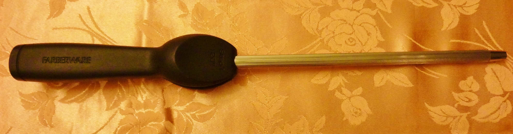
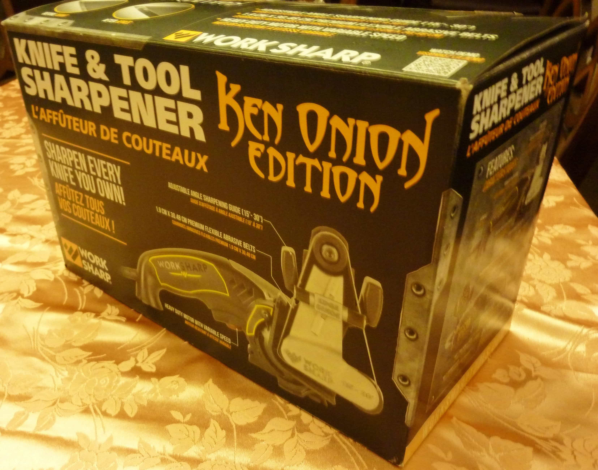
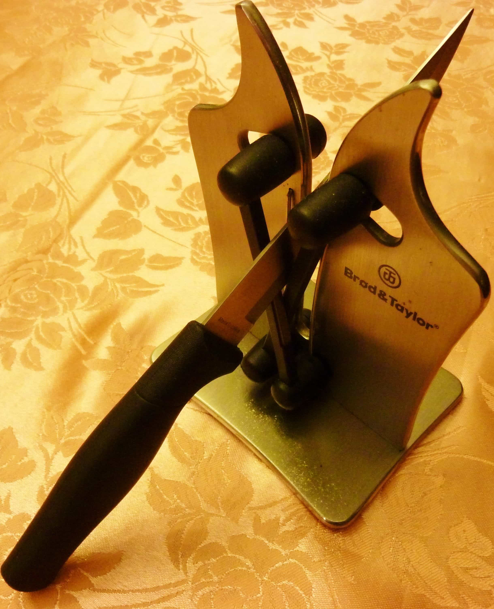
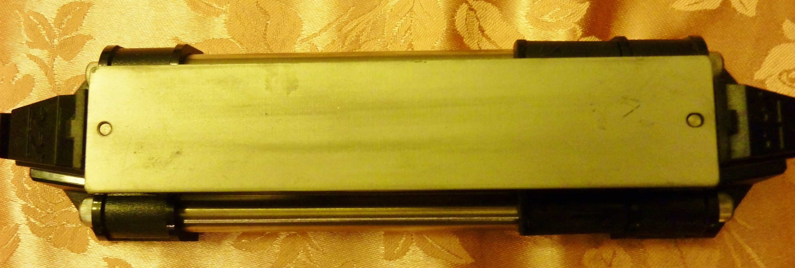

Dull knives are more than just an annoyance, they’re a safety hazard. Don’t believe me? Fine. I dare you to use a dull knife for an entire month. If you actually do this, what you’d find is that a dull knife requires more pressure to get the job done compared to a sharp knife. And because you’re applying more pressure, you’re at a greater risk of cutting yourself. The safest knife is a knife that does the work for you, not the other way around.
So, what can you do to achieve a hair-splitting knife edge? Well there’s 3 things: honing, sharpening, and stropping. Do these 3 things and dull knives will be a thing of the past! Let’s discuss each of these 3 in greater detail, shall we?
Hone, Hone, Hone Away!
Just what the hell is honing anyways? Without getting too technical, honing is the process of aligning a misaligned knife edge. So, you’re probably wondering how a knife’s edge gets misaligned to begin with. Every time you use your knife to slice, chop, or cut something, you knock your edge off alignment ever so little.
A knife edge is extremely delicate, and even the action of chopping up vegetables can over time result in an edge that is folded over (AKA misaligned). The thing is, we can’t prevent misalignment; we can only correct it. Honing is the process of correction.

This Is What A Honing Rod Looks Like. Make Sure You Get One!
I’m not going to get into the details of how to hone a knife, because that’s a discussion in and of itself. Instead I suggest you check out my honing 101 instructable. It explains how to hone a knife in 3 simple steps.
Get Yourself A Sharpener!
I said it before and I’ll say it again, dull knives are a safety hazard. If you have any reason to never use a dull knife ever again, let that be motivated by the safety of you and your loved ones. Without ranting on too much, my point is this: dull knives suck, so we need to sharpen them. Knife sharpening is an interesting topic. It can be as simple or complicated as you make it to be. I prefer simple. It is the process of slowly abrading material (steel), with the purpose of achieving as sharp an edge as possible. When it comes down to it, you have 3 choices as far as knife sharpeners are concerned:
Electric Knife Sharpeners
Electric knife sharpeners take away most of the skill and technique required to sharpen an edge. They’re typically the most expensive of the three types of sharpeners.

Work Sharp Ken Onion Edition Is One Of The Best Electric Sharpeners On The Market
What I Like:
- It’s All About Quick Results—Good electric knife sharpeners can get your blade from dull to finger cutting sharp in about a minute!
- Anyone Can Use Them—So easy, even grandma and grandpa can work these. Once you know the basics of knife sharpening, it’s literally plug and play.
What I Dislike:
- Can Cost Quite A Bit Of Money—The good ones can be quite expensive. I’m talking in and around the range of $140-250.
- Electronics Malfunction—Compared to the other three sharpeners, the electric variations are the least durable.
Pull Through Sharpeners
If you’re looking for the most bang for your buck, pull through sharpeners are your best bet. You can find some awesome ones that cost less than a McDonald’s combo meal!

Brod & Taylor Is The Crème De La Crème Of Pull Throughs!
What I Like:
- Not Hard On The Wallet—Unlike the electrics, pull through sharpeners are very reasonably priced. That’s not to say you can’t find a $150 pull through. Price range is about $5-150.
- Perfect For Outdoorsmen—The fact that they’re portable, lightweight, manual (no batteries or electricity required), and easy to use, make them the ideal sharpener for camping, hunting, fishing, and hiking trips. You can even toss one in the car!
What I Dislike:
- Results Are Average—The only caveat with this are the results are average. It sharpens an edge to the point where you should be able to get the job done, but nothing more.
- Wouldn’t Trust Them On My Expensive Knives—Pull throughs are perfect for whipping up a beater knife into shape (I say this from experience). I wouldn’t use them for my expensive collection, and I don’t recommend you do either.
Stone
Old is gold. No seriously, old is gold! It’s no surprise that this ancient sharpening technique is still relevant even today.

You Can Sharpen Just About Anything On This. Talk About Versatility!
What I Like:
- You Can Expect Professional Results—If used correctly, sharpening stones can produce results similar to a professional service. Of course, this depends on several different variables: stone quality, sharpening technique etc.
- Most “Natural” Way To Sharpen—One thing I dislike about electric and pull through sharpeners is that they can be a little too aggressive on a knife edge, and they strip off too much steel. With sharpening stones, you have full control over how much steel is abraded.
What I Dislike:
- Takes Time To Learn—Sharpening using stone requires a little bit of a technique and understanding. In that sense, it’s not everyone’s cup of tea.
- Confusing For The Newbie—Sharpening stones are a completely different ball game. Diamond (continuous and non-continuous), water, ceramic, and oil stones are what you can expect to find these days. This is just high level though. The deeper you dive, the more detailed it gets!
Last But Not Least, Stropping!
Stropping is something I usually do after I sharpen. To strop is to polish, coat, and align your edge. Think of it as the final step in achieving maximum sharpness. Wondering how to strop? Here’s an instructable I wrote on the topic. Check it out!
You should be honing every two weeks. When honing is no longer effective, then and only then should you sharpen (and strop).
Read More: Is Agribusiness Making You Sick?